Chapter 8: Getting Started With Actors¶
In the last chapter, you used the TaskGroup and ThrowingTaskGroup APIs to execute tasks in parallel, allowing you to make use of multiple threads and CPU cores on your device. This boosts your app’s performance and allows you to run more satellite scans in the same amount of time as non-task-group code.
You explored TaskGroup‘s ingenious design, which allows you to run tasks in parallel but still collect the execution’s results in a safe, serial manner by iterating the group as an asynchronous sequence.
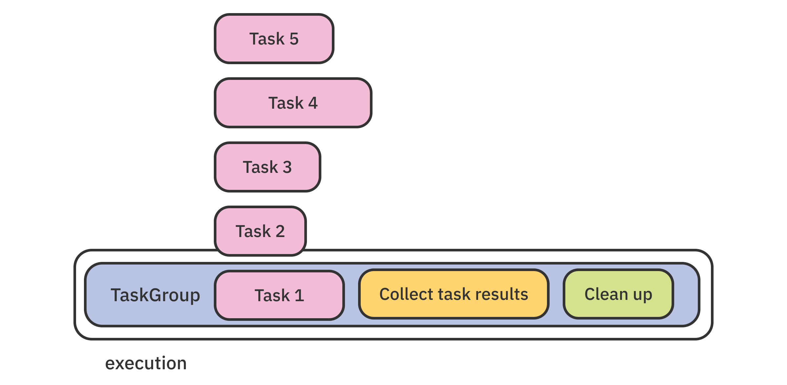
As mentioned in the “Mutating shared state” subsection of the previous chapter, some problems require you to update your state from a concurrent context. That’s one of the challenging aspects of concurrent programming: taming different threads that try to access the same piece of memory at the same time.
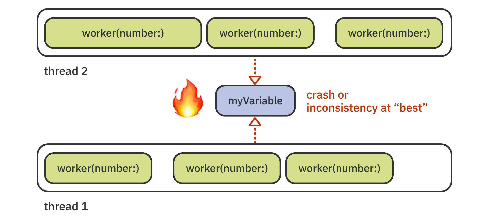
This chapter will cover how the new Swift concurrency model addresses data races by using a new type: actor.
Before you dive into this new type, you’ll take a moment to understand what the issue with updating mutable state really is.
Understanding thread-safe code¶
You might have seen methods described as thread-safe in documentation from Apple or third-party frameworks.
This usually means that, regardless of whether you’re calling an API from the main thread or a so-called background thread, the method will always behave as expected. In other words, the method will still work, even when multiple threads call it at the same time.
Note: The concept of thread-safe code is also sometimes referred to as linearizability or atomicity, which aims to limit the outcomes of concurrently accessing an object from multiple processes.
Unfortunately, in Objective-C and versions of Swift before 5.5, there was no syntax to mark a method as thread-safe. You had to rely on each method’s documentation to find out whether it was safe or not.
Third-party frameworks sometimes give you access to their source, but that doesn’t always solve the problem. For example, can you tell immediately if this piece of code is thread-safe?
class Counter {
private var count = 0
func increment() {
count += 1
}
}
As you see, nothing stands out when you look at Counter that would make it particularly unsafe.
And yet, if two threads running in parallel both call Counter.increment(), you might not end up with a count increased by exactly two. Even worse, if the two calls to Counter.increment() happen at precisely the same moment — your app will crash.
Even more worrisome is that crashes rarely happen when you compile your app for debugging — for example, when the app is running in your iOS simulator or you started it from Xcode on your device. Release builds are the ones that are optimized and fast enough to produce a data-race crash.
Therefore, you can say that any code that doesn’t take proactive steps towards protecting shared mutable state from concurrent access is inherently not thread-safe.
Before Swift 5.5, developers used locks or serial dispatch queues to ensure exclusive access to shared state. With a lock, for example, a thread locks the access to a shared resource, and other threads need to wait for it to unlock before they can read or write to that same resource.
Effectively, threads lock each other out to guarantee exclusive access to the resource:
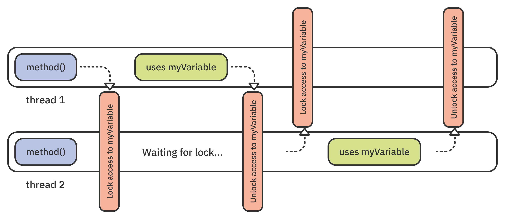
Concurrent code that uses lock APIs — like os_unfair_lock — is fairly fast and safe when written well. The previous code sample looks like this when you use a lock:
class Counter {
private var lock = os_unfair_lock_s()
private var count = 0
func increment() {
os_unfair_lock_lock(&lock)
count += 1
os_unfair_lock_unlock(&lock)
}
}
Aside from its relative verbosity, the code looks pretty straightforward. It’s a viable solution to protecting count.
However, do you remember why you looked into this section’s code sample in the first place? As a developer using this API, how can you tell if calling Counter.increment() is thread-safe or not? Furthermore, how can the compiler itself know your code is thread-safe, so it can help protect you from any races resulting from a developer mistake, for example?
If you don’t have access to the code, or the free time to read it thoroughly, there’s really no way to tell if it’s really safe. That’s where actors come in.
Meeting actor¶
The actor type is one of the concurrency-related improvements introduced in Swift 5.5. actor is a programming type just like its peers: enum, struct, class and so on. More specifically, it’s a reference type like class.
The code looks quite familiar, too. Here’s the example from the previous section. This time, however, it replaces class with actor to make it thread-safe:
actor Counter {
private var count = 0
func increment() {
count += 1
}
}
You might wonder if a new language type is really necessary to address data races. In this and the next chapters, you’ll explore many of actor’s specific behaviors. You’ll discover for yourself that actors are both complex and powerful — and certainly a type-worthy addition to Swift.
Actors are an existing, well-established model for concurrent computation. You can read about them in detail in Wikipedia’s Actor model (https://en.wikipedia.org/wiki/Actor_model) article.
Actors behave according to a few basic rules that allow them to guarantee the safety of their internal state. Different implementations vary across languages, so in this chapter, you’ll learn how actors function specifically in Swift.
An actor in Swift can safely access and mutate its own state. A special type called a serial executor, which the runtime manages, synchronizes all calls to the actor’s members. The serial executor, much like a serial dispatch queue in GCD, executes tasks one after another. By doing this, it protects the actor’s state from concurrent access:
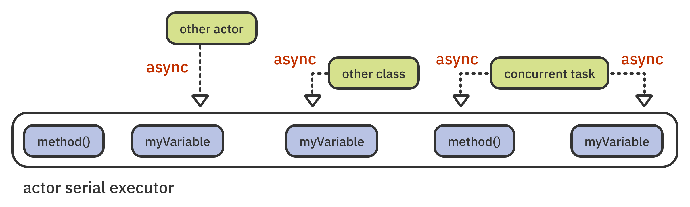
When you look up the Actor protocol (https://developer.apple.com/documentation/swift/actor), which all actors adhere to, you’ll see there’s only a single requirement. Namely, all actors must have a property called unownedExecutor, which is the aforementioned executor that serializes access to the actor state.
But what about the real cause of data races? How can you guarantee another type won’t call your actor from multiple threads at the same time and cause a crash?
actor has a special deal with the Swift compiler to take care of that.
Access to the actor from other types is automatically performed asynchronously and scheduled on the actor’s serial executor. This is called the state isolation layer, outlined here:
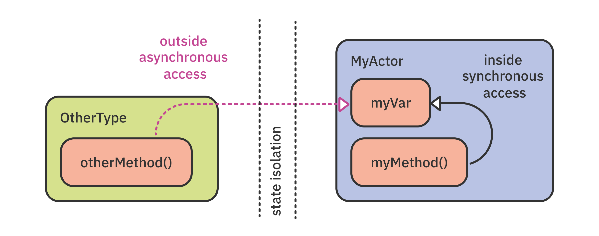
The state isolation layer ensures that all state mutation is thread-safe. actor itself is the guarantee of thread-safety for consumers of the API, the compiler and the runtime.
Recognizing the main actor¶
You’ve already worked with actors in this book, although they were only mentioned in passing. Any time you had to work on UI-related code, you ran it on the main actor.
You ran code on the main actor by calling MainActor.run(...). Additionally, you annotated methods that should automatically run on the main actor with @MainActor.
Is the main actor an actor type with all of the actor behaviors discussed above?
Yes, indeed! The main actor runs code serially on the main thread and protects its shared state: the UI of your app. It’s a global actor that’s accessible from anywhere, and you can use its shared instance across your app.
You’ll learn more about global actors in Chapter 9, “Global Actors”.
Now that you’ve praised the main actor for its stellar performance in your app’s architecture, it’s time to get started with this chapter’s project — implementing your first actor types.
Getting started with actors¶
EmojiArt is an app that lets you browse an online catalog of digital emoji art. To verify that the digital art is authentic, the app reads the feed of current works of art from the server, verifies the digital signature of the images and, only then, displays them onscreen.
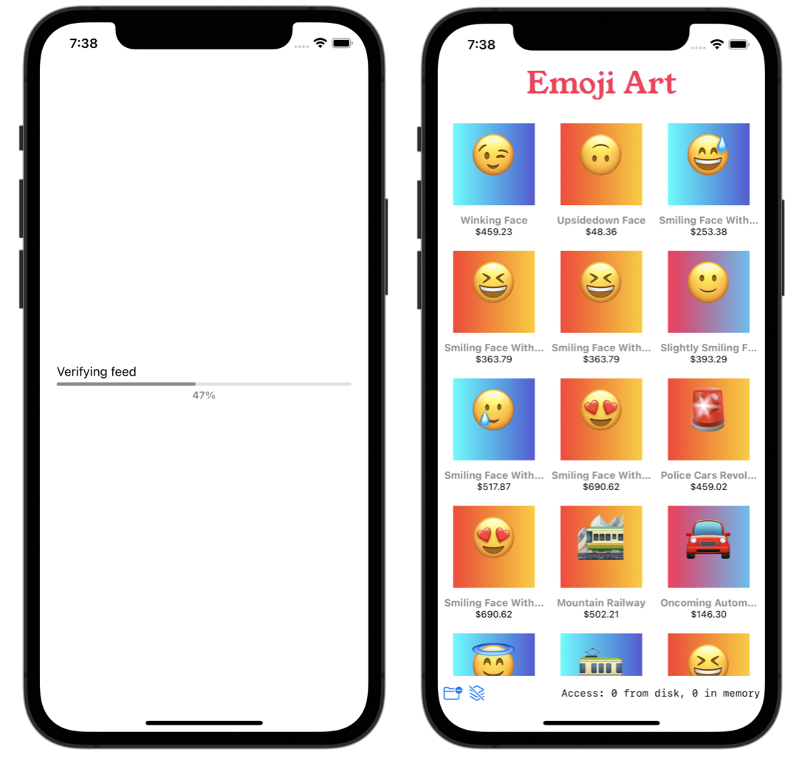
Open the starter version of EmojiArt in this chapter’s materials, under projects/starter.
Like all projects in this book, EmojiArt’s SwiftUI views, navigation and data models are already wired up and ready to go. This app has more code than this book’s other projects, but you’ll use it to work through a lot of concepts throughout this and the next chapters.
Note: Like the rest of this book’s projects, EmojiArt uses sample data to teach a set of concepts; it’s not an actual digital art store.
You use an actor when you want to protect a state from concurrent mutation. You’ll try out actors for the first time by implementing the app’s loading screen.
You’ll display a live-updating progress bar of the feed’s verification process and use an actor to safely update the progress value from concurrently running tasks.
Before getting started with the project, start the book server. If you haven’t already done that, navigate to the server folder 00-book-server in the book materials-repository and enter swift run. The detailed steps are covered in Chapter 1, “Why Modern Swift Concurrency?”.
Now, build and run the project. Take a look at EmojiArt’s initial state:
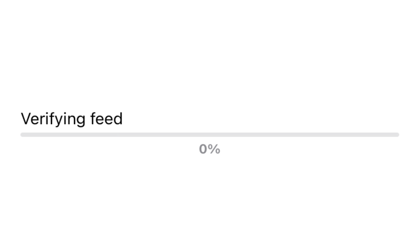
Here, you see LoadingView, which will run the verification onscreen. Once that’s done, the app will navigate to ListView, which displays the actual art pieces.
You haven’t implemented the model method that verifies the images yet, so the progress bar is stuck at zero percent with no chance of completion. You’ll fix that as you work through this chapter.
Mutating state concurrently¶
Open the app’s model file, EmojiArtModel.swift, and add this new code inside the class:
Note: If you already ran the app, you’ll see a warning about updating the UI from a background thread. Ignore it for now; you’ll fix it shortly.
private(set) var verifiedCount = 0
func verifyImages() async throws {
try await withThrowingTaskGroup(of: Void.self) { group in
}
}
verifiedCount is the verification counter that you’ll update concurrently. verifyImages() is the method that will verify the individual pieces of artwork. To perform concurrent work, you create a new task group via withThrowingTaskGroup(...), as you did in the previous chapter.
Unlike before, however, you’ll update your state directly from the task body so that mutation happens concurrently and in real time.
To perform the verification, insert the following code inside withThrowingTaskGroup(...)’s trailing closure:
imageFeed.forEach { file in
group.addTask { [unowned self] in
try await Checksum.verify(file.checksum)
self.verifiedCount += 1
}
}
try await group.waitForAll()
In the code above, you iterate over the image files in imageFeed, assuming the model has already fetched those from the server, and add a new task for each file. If Checksum.verify(_:) detects an asset with an invalid checksum, it throws an error. Otherwise, the asset is valid and you increase verifiedCount by one.
Finally, you use group.waitForAll() to wait for all tasks to complete and re-throw any task errors out of the group.
Note: As you know, the group implicitly waits for its tasks to complete before returning. However, if you don’t use any try keywords inside the group closure, the compiler decides you want a non-throwing group and will not re-throw task errors! To fix this, you use waitForAll() prefixed with try to hint to the compiler that it should use a throwing group after all.
Given all your experience with these book’s projects, you’re likely already rolling your eyes because you know that mutating verifiedCount from within the task is unsafe. No worries, you’ll fix that in a moment.
Showing the art and updating the progress¶
You’ll start by adding a call to verifyImages(...) in the screen showing the verification indicator. Open LoadingView.swift and scroll to the task { ... } view modifier.
Just below try await model.loadImages() — the line that fetches the image feed from the server — insert:
try await model.verifyImages()
withAnimation {
isVerified = true
}
After successfully fetching the feed, you call verifyImages() to verify the authenticity of the assets. Finally, you set isVerified to true. Changing isVerified causes the main view to replace LoadingView with ListView and display the image feed onscreen.
Build and run. You’ll see that, shortly after displaying LoadingView, the image feed pops up. The thumbnails aren’t visible right now, but you can see the names and prices of the works of art.
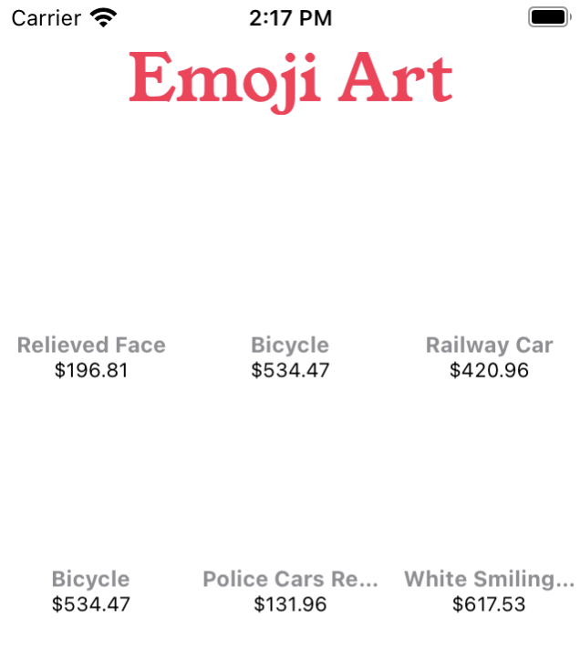
Since you update verifiedCount concurrently and want to avoid overwhelming the main thread, you’ll add a timer to LoadingView that will periodically update the progress bar during verification.
Add this new view modifier to LoadingView, just below where the alert modifier code wraps up:
.onReceive(timer) { _ in
guard !model.imageFeed.isEmpty else { return }
progress = Double(model.verifiedCount) / Double(model.imageFeed.count)
}
The starter code for LoadingView includes a ready-to-go timer property called timer. In onReceive(_:perform:), you subscribe to this timer and make sure there are actually feed items, to avoid unnecessary updates.
Finally, you divide the number of verified assets by the count of all images, then update progress. This will update the progress bar with the latest value a few times per second.
Build and run one more time. You’ll now see the verification go through to one hundred percent.
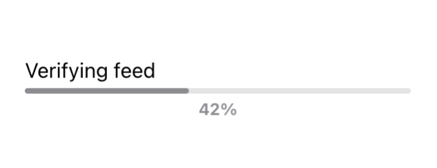
Surprisingly, everything seems to be running just fine with no crashes, despite the concurrent updates.
So are there any race conditions in the code you just wrote? It’s quite hard to tell, considering the app is compiled for debugging and doesn’t have any optimizations. This might mean the app is just too slow to reproduce this scenario, compared to an optimized release version that is more prone to triggering a data race.
Detecting race conditions¶
One way to detect data races in your code is to enable the Thread Sanitizer in your Xcode project scheme. Click the scheme selector in Xcode’s toolbar and select Edit scheme…:
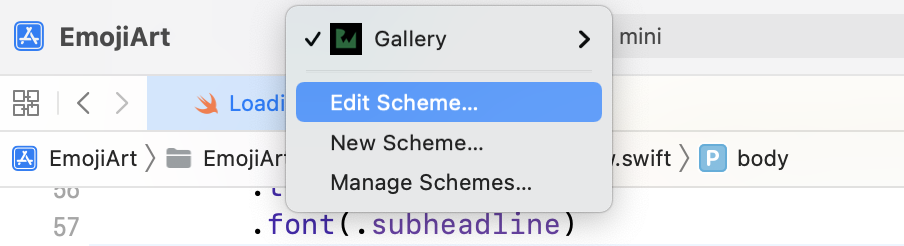
Next, in the scheme window, click Run, then select the Diagnostics tab. Check the Thread Sanitizer checkbox and, finally, close the scheme editing window.
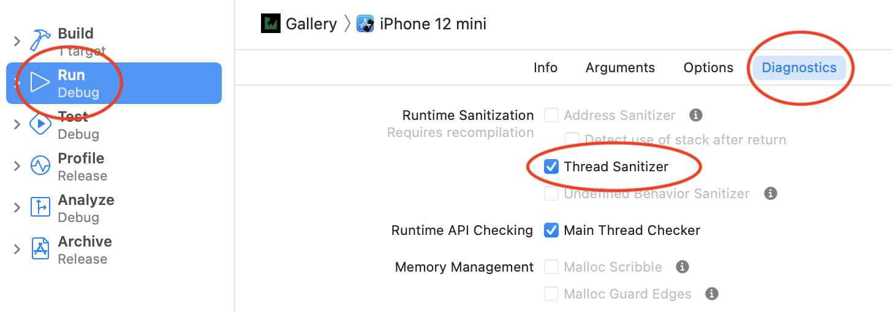
When you rebuild the project, Xcode will bake some extra checks into your app. At runtime, these will verify whether your code concurrently mutates any data.
Build and run. Let the app load and switch to the feed screen.
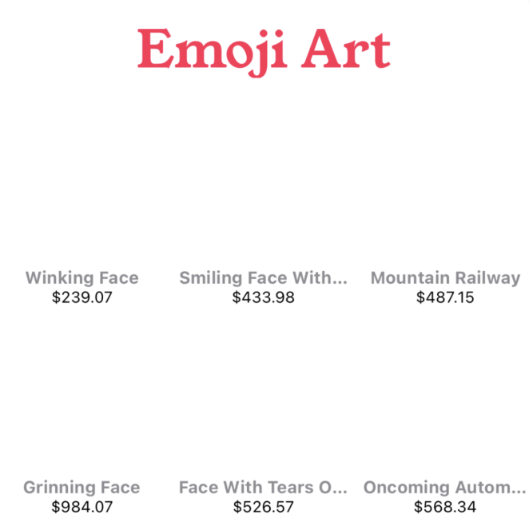
The app UI looks the same as before. If you direct your attention to Xcode, however, you’ll notice a new purple runtime warning:
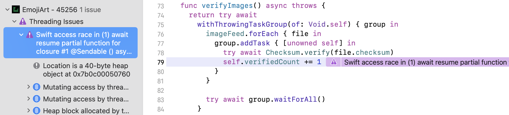
If Thread Sanitizers detects a data race, the code will eventually crash in production. This is no bueno.
Using actors to protect shared mutable state¶
To protect EmojiArtModel.verifiedCount from concurrent access, you’ll convert EmojiArtModel from a class to an actor. Since actors exhibit a lot of typical class behavior, such as by-reference semantics, the change shouldn’t be too complex.
Open EmojiArtModel.swift and replace class EmojiArtModel: ObservableObject with:
actor EmojiArtModel: ObservableObject
This changes the type of the model to an actor. Your shared state is now safe!
As you see in Xcode, actors don’t magically solve concurrent access — you’re now facing a compile error. The compiler now follows the rules for actors and finds issues in the code that used to compile before.
In other words, some of your code that used to work doesn’t compile as an actor. The compiler doesn’t magically solve the issues; instead, it suggests how you should change your code to make it work safely in a concurrent context. But more importantly, when you use an actor, the compiler protects you against creating unsafe thread accesses in your code.
Now, you’ll follow Xcode’s directions to make the existing code thread-safe.
The error says:
"Actor-isolated property 'verifiedCount' can not be mutated from a Sendable closure".
You’ll learn about Sendable in the next sections. For now, just know you get the error because you can’t update the actor state from “outside” of its direct scope.
This chapter’s introduction mentioned that all code that isn’t confined to the serial executor of the actor is “outside” access. That means it includes calls from other types and concurrent tasks — like your TaskGroup, in this case.
To overcome this issue, you’ll extract the code to increment verifiedCount into a method, then call it asynchronously. This allows the actor to serialize the calls to that method.
Add this new method anywhere inside EmojiArtModel:
private func increaseVerifiedCount() {
verifiedCount += 1
}
As discussed before, you can call this method synchronously from “inside” the actor’s direct scope, but the compiler will enforce asynchronous access from “outside” of it.
Now, find self.verifiedCount += 1 in your concurrent task code. Replace it with:
await self.increaseVerifiedCount()
This new code will make calls to increaseVerifiedCount() serially; this ensures you mutate your shared state safely.
Sadly, once you resolve that error, you still face a whole bunch of compiler errors. Now that imageFeed is part of your EmojiArtModel actor, you can’t access that property on the main actor. Oh, the terror! SwiftUI runs on the main actor and can’t read the feed anymore. You’ll fix that next.
Sharing data across actors¶
Given that you mostly use EmojiArtModel.imageFeed to drive the app’s UI, it makes sense to place this property on the main actor. But how can you share it between the main actor and EmojiArtModel?
In this section, you’ll move imageFeed to execute on the main actor, but the property itself will remain inside EmojiArtModel. It sounds a bit esoteric, but it’s actually straightforward. In fact, you’ve already done it many times in this book — by using the @MainActor attribute.
Open EmojiArtModel.swift and scroll to imageFeed. Annotate the property with @MainActor, so it looks like this:
@Published @MainActor private(set) var imageFeed: [ImageFile] = []
This code moves imageFeed from the EmojiArtModel’s serial executor to the main actor. That clears the compile errors in the SwiftUI code because imageFeed is now accessible from the main thread.
To fix the rest of the errors, replace imageFeed.removeAll() in loadImages() with:
await MainActor.run {
imageFeed.removeAll()
}
And replace imageFeed = list with:
await MainActor.run {
imageFeed = list
}
The new code makes a little detour from running code on your actor’s executor. Instead, it runs the two calls asynchronously on the main actor, where it’s safe to update the UI:
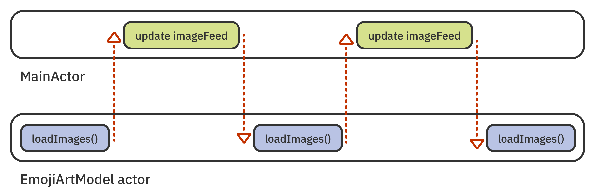
You’ve now fixed almost all the errors; you’ll take care of the rest next.
Fixing the remaining errors¶
Scroll to verifyImages() and find the error on the line that calls imageFeed.forEach { ... }. To access the actor, you need to call imageFeed.forEach { ... } asynchronously. Prepend an await before the call, like this:
await imageFeed.forEach { file in
There’s one final error left in LoadingView.swift. Toward the bottom of the file, there’s an error on the line that calculates the value of progress:
Actor-isolated property 'verifiedCount' can not be referenced from the main actor
Prepend the math expression with an await and wrap the offending line in a Task, like so:
Task {
progress = await Double(model.verifiedCount) /
Double(model.imageFeed.count)
}
Congratulations, you’ve followed Xcode’s guidance to completion and fixed all the unsafe code. Build and run again. This time, there aren’t any purple warnings!
At this point in the chapter, you’ve worked through designing your first actor type and experienced some actor-specific compiler behavior. But there’s one topic you skipped over: What is the Sendable type that those compiler errors mentioned? You’ll learn about Sendable next.
Understanding Sendable¶
Sendable is a protocol that indicates that a given value is safe to use in concurrent code. “Use how?” you might ask. Dig in and see.
Open the Sendable protocol’s documentation page (https://developer.apple.com/documentation/swift/sendable).
Scroll down a bit to the Inherited By section, and you’ll see that a few protocols inherit from Sendable. For example, the Actor protocol is a Sendable; therefore, actor instances are safe to use in concurrent code. That makes sense.
In the next section, Conforming Types, you’ll see that many types in Swift are sendable by default; for example: Bool, Double, Int, StaticString, UnsafePointer and others are all safe to use in concurrent code.
Generally speaking, value types are safe to use in concurrent code because value semantics prevent you from accidentally mutating a shared reference to the same object.
Classes are generally not sendable because their by-reference semantics allow you to mutate the same instance in memory. You did so earlier in this chapter, when you mutated verifiedCount on the same model instance concurrently.
You use the @Sendable attribute to require thread-safe values in your code. In other words, you use it to require that values must conform to the Sendable protocol.
For example, look at the Task type. Because it creates an asynchronous task that could unsafely mutate shared state, the Task.init(...) declaration requires that the operation closure is Sendable:
init(
priority: TaskPriority? = nil,
operation: @escaping @Sendable () async -> Success
)
The operation closure is @escaping because it’s asynchronous and also @Sendable, which verifies at compile-time that the closure code is thread-safe. You already experienced this protection first-hand when you got compiler errors for trying to mutate shared state from inside TaskGroup.addTask(...).
To fully understand the role of the Sendable protocol, take a moment to have another look at its documentation page (https://developer.apple.com/documentation/swift/sendable). Note how this protocol has no requirements — you really only use it to annotate types that you know are safe to use across threads.
Once you add Sendable conformance to one of your types, the compiler will automatically limit it in various ways to help you ensure its thread safety. For example, it’ll ask you to make classes final, class properties immutable, and so on.
Look up addTask(...) and you’ll see it also requires a Sendable closure:
mutating func addTask(
priority: TaskPriority? = nil,
operation: @escaping @Sendable () async -> ChildTaskResult
)
Therefore, the best practice in your own code is to require that any closures you run asynchronously be @Sendable, and that any values you use in asynchronous code adhere to the Sendable protocol.
Additionally, if your struct or class is thread-safe, you should also add Sendable conformance so other concurrent code can use it safely.
Making safe methods nonisolated¶
Now that you’ve moved imageFeed off your own actor and onto the main actor, the methods that work with the feed don’t actually work with your actor’s shared state directly.
Back in EmojiArtModel.swift, scroll to loadImages() and check the code. None of it reads from or mutates either imageFeed or verifiedCount. You update imageFeed from the main actor, then the main actor serializes execution by default.
So in fact, loadImages() and downloadImage(_:) don’t have any state to protect anymore. Therefore, they don’t need the actor behavior at all.
When methods like that are safe, you can aid the runtime and remove the safety harness around them by marking them with the nonisolated keyword.
Prepend the loadImages() declaration with nonisolated like so:
nonisolated func loadImages() async throws
Next, do the same for downloadImage(_:):
nonisolated func downloadImage(_ image: ImageFile) async throws -> Data
With these changes, the two methods behave as if they are vanilla class methods instead of actor methods. You also get a small performance win from removing the safety checks. You probably won’t feel it if you call these methods a few times, but in a highly concurrent context, you’ll see some speed improvement.
Designing more complex actors¶
Now that you’ve created a fairly simple actor, it’s time to try a more complex design. You’ll mix actors, tasks and async/await to solve one of the eternal problems in programming: image caching.
Throughout the rest of the chapter, you’ll build an actor that fetches the digital emoji assets from the book server and caches them in memory.
To start, add a new file to the project and call it ImageLoader.swift. Replace the placeholder code with the bare bones of that new actor:
import UIKit
actor ImageLoader {
enum DownloadState {
case inProgress(Task<UIImage, Error>)
case completed(UIImage)
case failed
}
private(set) var cache: [String: DownloadState] = [:]
}
In essence, this actor manages a cache dictionary that will store both the ongoing downloads and the images you’ve downloaded already.
cache contains values of type DownloadState, which can have one of these three download states:
- inProgress: The asset download has started but hasn’t finished yet. This case gives you the in-flight task, which lets you await its completion and get the resulting image directly.
- completed: You’ve already downloaded the asset, and you’re keeping the
UIImagein memory. - failed: You already tried downloading the asset with the given path, but the server returned an error.
Filling up the cache¶
Next, you’ll add a few methods to manage the cache: adding images, starting a new download and clearing the cache.
First, you’ll use a method to add an image asset to the in-memory cache. Add this next method to your new actor:
func add(_ image: UIImage, forKey key: String) {
cache[key] = .completed(image)
}
You can directly mutate cache from actor methods, so you simply set the value for the given asset key to .completed(image).
Next, you’ll add a method to fetch a single image. It will get the image from memory if you’ve downloaded it already. Otherwise, it will get the image from the server. Start by checking the in-memory cache:
func image(_ serverPath: String) async throws -> UIImage {
if let cached = cache[serverPath] {
switch cached {
case .completed(let image):
return image
case .inProgress(let task):
return try await task.value
case .failed: throw "Download failed"
}
}
}
If you find a value matching the asset key in cache, you use one of these three options:
- If the asset has finished downloading, you return the associated image.
- If the asset download is in progress, you await the associated task and return its
value. This way, the original request will run as normal. The runtime will suspend here and return once the task completes. - Finally, if the asset fails to download, you simply throw an error.
Next, it’s time to add some code to download an image from the server if you don’t find the asset in the local cache. Append the following code to the bottom of image(_:):
let download: Task<UIImage, Error> = Task.detached {
guard let url = URL(string: "http://localhost:8080".appending(serverPath))
else {
throw "Could not create the download URL"
}
print("Download: \(url.absoluteString)")
let data = try await URLSession.shared.data(from: url).0
return try resize(data, to: CGSize(width: 200, height: 200))
}
cache[serverPath] = .inProgress(download)
Similar to previous chapters, you create a detached asynchronous task and download the image from the server. To keep track of the ongoing downloads, you print a debug log to the console.
Before returning, you call the starter-project function resize(_:to:) to scale down the server image and store it as a thumbnail.
Finally, once the task is ready, you add it to cache as an inProgress value. Should the same asset pop up in the feed again, you won’t download it a second time. Instead, you’ll wait for the ongoing download task to complete and return the fetched result.
Wrapping up the image download¶
Last but not least, you need to handle the result of the download. Append this last piece of code to image(_:):
do {
let result = try await download.value
add(result, forKey: serverPath)
return result
} catch {
cache[serverPath] = .failed
throw error
}
Here, you wait for the download task to complete, then you call add(_:forKey:) to add the image to the in-memory cache and return it.
If the task throws, you update cache with a failure value for this asset before re-throwing the error.
With that, you’ve finished the actor’s main logic. Before moving on, add one last convenience method to the actor:
func clear() {
cache.removeAll()
}
You’ll use clear() in the next chapter to clear the in-memory cache for debugging purposes.
Having finalized the new actor, you need to “spread the love” around your app so all the views can use it to display images.
Sharing the actor¶
Since you’ll use ImageLoader in a few different views, your next step is to inject it directly into the SwiftUI environment, so you can easily access it throughout your view hierarchy.
To use it as an environment object, though, you need to adhere to ObservableObject. Your loader doesn’t feature any published properties, but SwiftUI requires an ObservableObject conformance anyway.
Open ImageLoader.swift and, at the top, add an ObservableObject conformance, like so:
actor ImageLoader: ObservableObject
Luckily, unlike other directions in this chapter, this change causes no compile errors. You can just move on with the next steps.
Open AppMain.swift and, under ListView(), add this modifier to inject the loader to the view hierarchy:
.environmentObject(ImageLoader())
Now, you can use ImageLoader from any view where you need images.
Another view bundled with the starter code, ThumbImage, displays a single asset in the image feed, so this is certainly a place where you’ll need ImageLoader. Open ThumbImage.swift and add this new property to the type:
@EnvironmentObject var imageLoader: ImageLoader
This line initializes the injected image loader. You’ll use it to fetch the asset image.
Move on to ThumbImage‘s view body, where you’ll add one more modifier to start the thumbnail download. Directly after overlay(...), add:
.task {
guard let image = try? await imageLoader.image(file.url) else {
overlay = "camera.metering.unknown"
return
}
updateImage(image)
}
When the thumbnail view appears onscreen, you call imageLoader.image(_:) to fetch the image from the server. If the image has already been downloaded, you return the cached image instead.
If the download fails, you set an overlay for the thumbnail to show the user that the image load failed.
Finally, if everything was a success, you update the view image by calling updateImage(_:).
Build and run. At last, you can enjoy some cool emoji art.
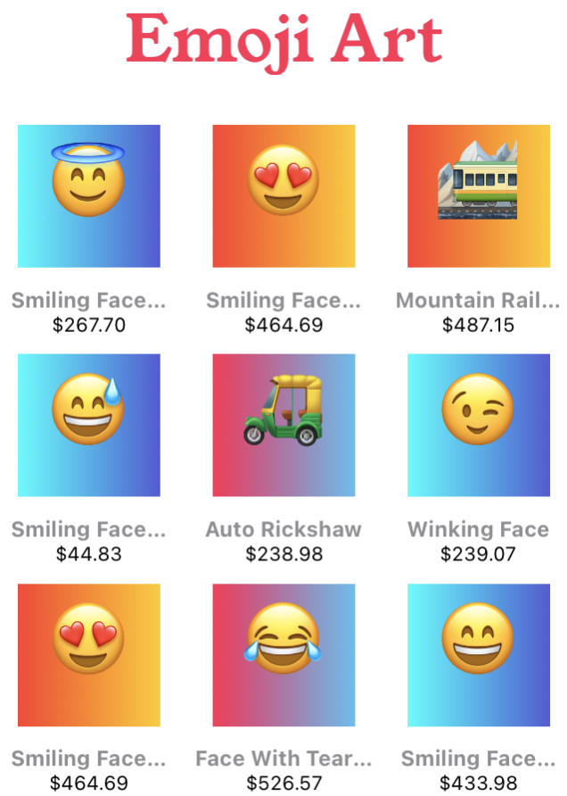
Wow, those “art” pieces aren’t cheap!
Note: If you want to “save” a few hundred dollars for an emoji art piece, you can peek into the book server’s code and see how to draw a gradient in Swift and add an emoji on top. Anyone can be an “artist”!
Using the cached assets¶
The server image feed intentionally returns some duplicate assets so you can play around with the scenario of getting an already-cached asset and displaying it.
When you look at Xcode’s output console, you’ll initially see some download logs like these:
Download: http://localhost:8080/gallery/image?11
Download: http://localhost:8080/gallery/image?16
Download: http://localhost:8080/gallery/image?23
Download: http://localhost:8080/gallery/image?26
Scroll all the way to the bottom of the feed, and you’ll see that the download logs stop appearing in the console, even if you keep scrolling up and down. Once you’ve downloaded all the assets, you only fetch images from memory!
To wrap this section up, open DetailsView.swift, where you’ll add some code to display a larger version of a selected asset.
Add the same imageLoader environment object property:
@EnvironmentObject var imageLoader: ImageLoader
Add a task modifier just below the existing foregroundColor modifier with the following code:
.task {
image = try? await imageLoader.image(file.url)
}
Build and run. Tap an image and enjoy the details preview:
Note: The details view shows the given unicode name for each emoji. Some of those names are pretty weird — I’m looking at you, “White Smiling Facevariation Selector16”!
Congratulations, the EmojiArt online catalog app is complete. Well, at least the part you had to work on in this chapter. You’ll explore some more opportunities to use actors in the next chapter.
Key points¶
- The actor type is a thread-safe type that protects its internals from concurrent access, supported by compile-time checks and diagnostics.
- Actors allow “internal” synchronous access to their state while the compiler enforces asynchronous calls for access from the “outside”.
- Actor methods prefixed with the nonisolated keyword behave as standard class methods and provide no isolation mechanics.
- Actors use a runtime-managed serial executor to serialize calls to methods and access to properties.
- The Sendable protocol indicates a value is safe to use in a concurrent context. The @Sendable attribute requires a sendable value for a method or a closure parameter.
In this hands-on chapter, you designed both simple and complex actor-based code. Most importantly, you experienced some of the hurdles of converting unsafe class code to thread-safe actor code.
The fun isn’t over yet, though. You’ll keep working on the EmojiArt app as you learn about global actors in the next chapter.
For the grand finale, you’ll once again search for alien life in Chapter 10, “Actors in a Distributed System”, where you’ll learn about using actors that work together across different devices.